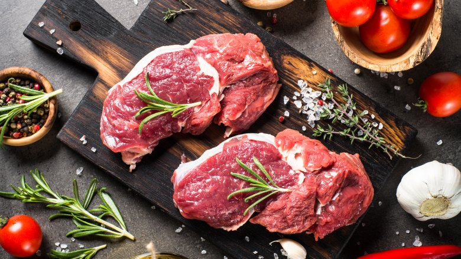
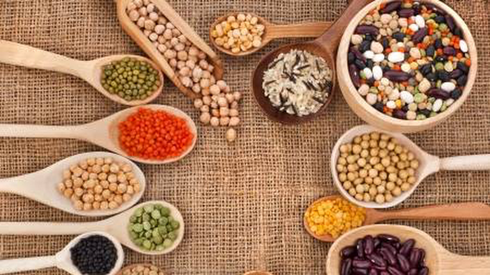

<!--
  Generated template for the ListingPage page.

  See http://ionicframework.com/docs/components/#navigation for more info on
  Ionic pages and navigation.
-->
<ion-header>
 
</ion-header>

<ion-content >
  <div class="img2">
    
    
 
    <div >
      <ion-icon (click)="rollBack()" name="arrow-back" class="back">Meats & seafood</ion-icon>
      <ion-icon name="cart" class="cart"></ion-icon>
      <ion-icon name="search" class="search"></ion-icon>
    </div>

  </div>
  <div >
    <ion-segment [(ngModel)]="food">
      <ion-segment-button value="Meats" class="meat">
        Meats
      </ion-segment-button>
      <ion-segment-button value="Fish" class="fish">
        Fish
      </ion-segment-button>
    </ion-segment>
  </div>
  <ion-row>
    <ion-col col-6 *ngFor="let item of products">
      <div class="img1">
        
        <div class="title1">{{item.name}}</div>
        <div class="title2">{{item.weight}}</div>
        <div class="title3">{{item.price}}</div>
        <div class="check">
          <ion-checkbox ></ion-checkbox>
        </div>
        <!--
        <div class="check" *ngFor="let check of data">
          <ion-checkbox [(ngModel)]="check.selected" [color]="check.name">

          </ion-checkbox>-->
        
      </div>

    <!--  -->
    </ion-col>  
    
    
  </ion-row>
  <ion-row>
    <ion-col col-6>
      <div >
        <button class="sort">Sort by</button>

      </div>
    </ion-col>  
    <ion-col col-6>
      <div >
<button class="filter">Filter</button>
      </div>
    </ion-col> 
  </ion-row>
</ion-content>
